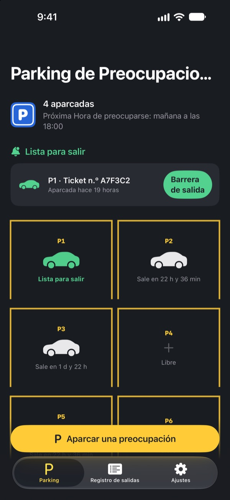
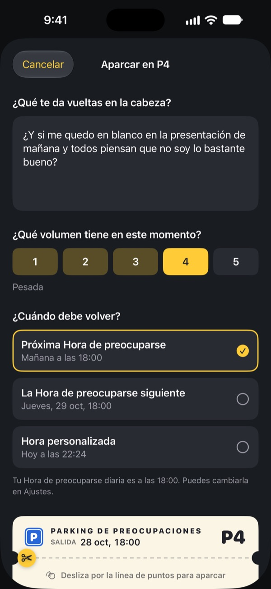
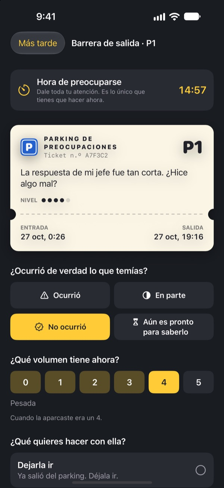
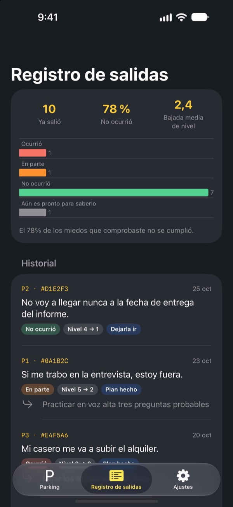

Aparca la preocupación.
Recógela luego.
Escribe lo que te da vueltas en la cabeza al acostarte y déjalo en un tique de parking. Te lo devolvemos a tu Hora de preocuparse. Hasta entonces, no tienes que cargar con ello.
Todas las funciones son gratis. Sin anuncios y sin cuenta.

Aparca una preocupación
Deja el ejemplo o escribe lo que te ronda ahora mismo. Al aparcarla se queda borrosa, y la vuelves a sacar a la Hora de preocuparse.
¿Apagas la luz y se enciende la cabeza?
En cuanto apoyas la cabeza en la almohada, empieza: algo que dijiste hoy, la reunión de mañana, el mensaje que sigue sin respuesta. Cuanto más intentas no pensar, más fuerte suena. Parking de Preocupaciones no te pide que la apartes. La escribes, le das una plaza y reservas un momento para ocuparte de ella.
Escrita, sale de tu cabeza
Escríbela tal como suena en tu cabeza y marca lo fuerte que suena ahora, del 1 al 5. Arranca el tique y la preocupación se queda en el parking, borrosa.
Si vuelve a aparecer, dile: ya tienes plaza. Tendrás tu momento, pero no ahora.

15 minutos a tu Hora de preocuparse
Cada día, a tu Hora de preocuparse, te llega un aviso. En la barrera de salida vuelves a leerla, compruebas si de verdad pasó y cuánto suena ahora.
Luego la dejas ir, la conviertes en un pequeño siguiente paso o la vuelves a aparcar hasta la próxima Hora de preocuparse.

Mira cuántas veces acertaron tus preocupaciones
A medida que salen preocupaciones, el registro de salidas muestra qué parte llegó a pasar y cuánto bajó su intensidad.
La preocupación suele pintar el futuro peor de lo que resulta. Cuanto más registras, menos te crees la siguiente.

Empieza en tres pasos
- 1
Elige tu Hora de preocuparse
La primera vez que la abres, eliges cuándo vas a ocuparte de tus preocupaciones cada día. Puedes cambiarla luego en Ajustes.
- 2
Aparca una preocupación real
Aparca ya algo que te ronde y nota cómo cambia su intensidad antes y después.
- 3
Permite los avisos de salida
A tu Hora de preocuparse te llega un aviso solo con el número de plaza.
Por qué funciona
- Preocuparse a una hora fija
- Quienes pasaron sus preocupaciones a un rato corto cada día se preocuparon menos y notaron menos ansiedad y problemas de sueño. (Borkovec et al., 1983; McGowan y Behar, 2013)
- Escribir para soltar
- Hacer un plan concreto evitó que las tareas pendientes se colaran en los pensamientos, y escribir cinco minutos antes de dormir ayudó a conciliar el sueño antes. (Masicampo y Baumeister, 2011; Scullin et al., 2018)
- Comprobar lo que pasó de verdad
- Cuando personas con preocupación crónica registraron sus preocupaciones, el 91 % no se cumplió. (LaFreniere y Newman, 2020)
Parking de Preocupaciones se basa en el aplazamiento de la preocupación, una técnica de la terapia cognitivo-conductual (TCC) estudiada durante décadas.
Todo es gratis
Gratis
- Plazas de parking ilimitadas
- Avisos diarios a tu Hora de preocuparse y hora de salida a tu medida
- Barrera de salida y registro de salidas
- Información de salidas: cuántas se cumplieron y cuánto bajó la intensidad
Propina, si quieres
- Si te ayuda, puedes dejarle una pequeña propina al desarrollador
- Pequeña, mediana o grande, como prefieras
La propina no desbloquea nada. Sin ella, todo funciona igual.
Sin anuncios, sin cuenta, sin servidores y sin herramientas de análisis. Todo lo que escribes se queda en tu iPhone.
Preguntas frecuentes
¿Cómo cambio mi Hora de preocuparse?
En la pestaña Ajustes, en Hora de preocuparse. La nueva hora se aplica a lo que aparques desde entonces. Las preocupaciones ya aparcadas mantienen su hora de salida.
No me llegan los avisos de salida.
Revisa Notificaciones en la pestaña Ajustes. Si pone que están desactivadas, toca Abrir los Ajustes de iOS y actívalas. Con un modo de concentración o No molestar, los avisos pueden llegar sin sonido. Aunque no llegue el aviso, las preocupaciones que ya toca revisar aparecen listas para salir en el parking.
¿Se ve mi preocupación en la notificación?
No. Las notificaciones solo muestran el número de plaza, por ejemplo «P3 está lista para salir». La preocupación solo aparece cuando abres la app y entras en la barrera de salida.
¿Puedo verla antes de la Hora de preocuparse?
Toca su coche en el parking y elige Enviarla ahora a la barrera de salida. Aun así, aplazar funciona mejor si esperas. Casi todas las preocupaciones se ven más pequeñas a la Hora de preocuparse.
¿Puedo pasar mis datos a un iPhone nuevo?
Todo se guarda solo en tu iPhone, sin cuenta ni sincronización. Si restauras el iPhone nuevo desde una copia de iCloud o del ordenador, o usas Inicio rápido, se pasa junto con los datos de tus otras apps.
¿Cómo borro mis registros?
En la pestaña Registro de salidas, desliza una entrada a la izquierda para borrarla. Si eliminas la app, se borra todo.
¿Es un tratamiento?
Parking de Preocupaciones es una herramienta de autoayuda basada en el aplazamiento de la preocupación de la TCC. No es un producto sanitario y no sustituye el diagnóstico ni el tratamiento de un profesional.
¿Y si lo estoy pasando muy mal?
Si la preocupación te está desbordando o piensas en hacerte daño, no lo cargues tú solo. En España, llama al 024 (línea de atención a la conducta suicida) o al 112 en una emergencia.
¿Dudas o sugerencias? Escribe a leeo@kakao.com.